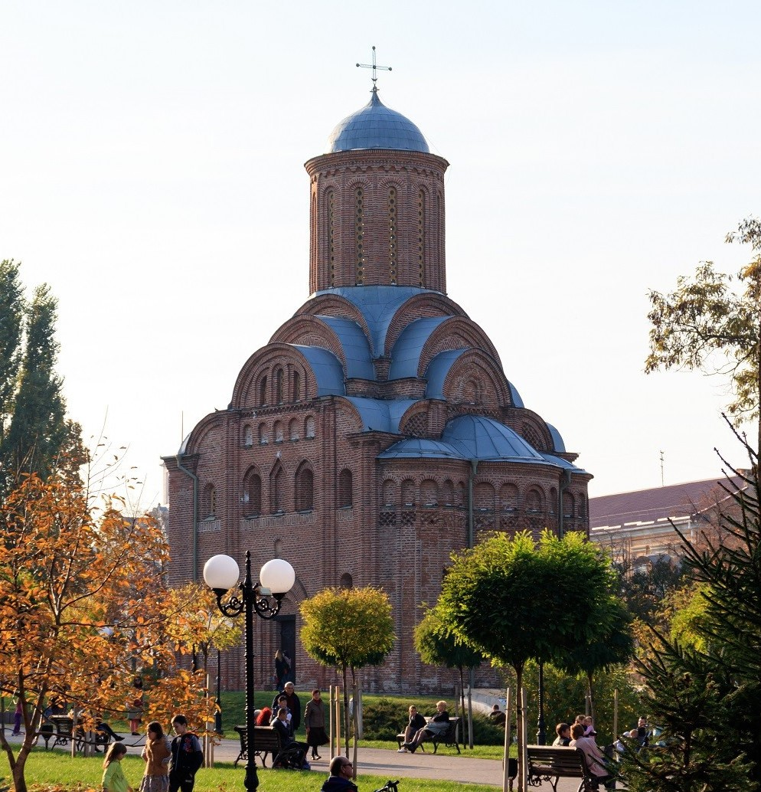
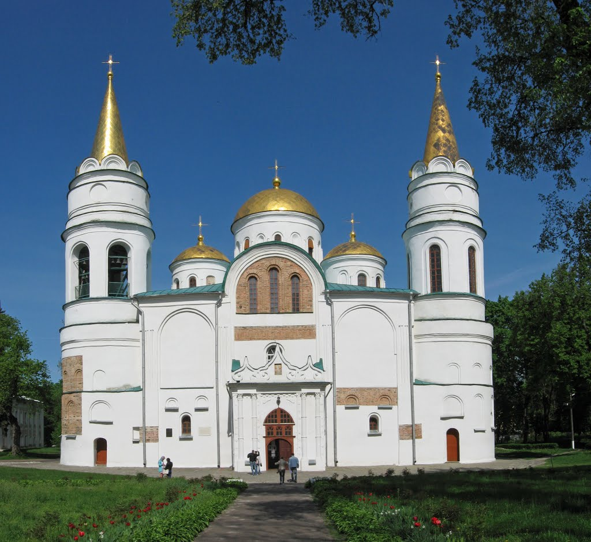

П'ятницька церква
Було споруджено в кінці ХІІ - на початку ХІІІ ст.
Детальніше
Катерининська церква
Було споруджено в 1715 році.
Детальніше
Драматичний театр
Було споруджено в 1959 році.
Детальніше
Чернігівський дитинець
Було споруджено в VII столітті
Детальніше

Спасо-Преображенський собор
Було споруджено в 1030-34 роках.
Детальніше